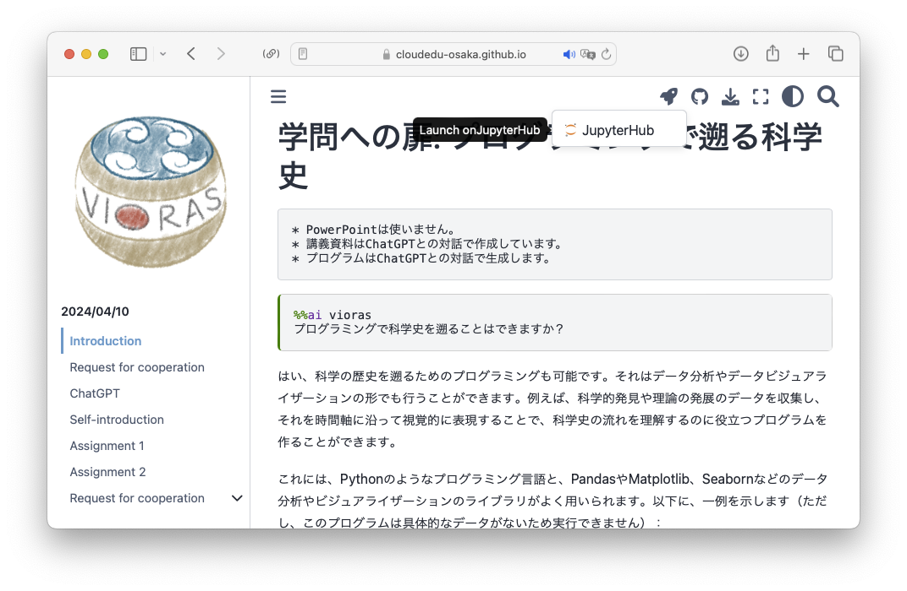
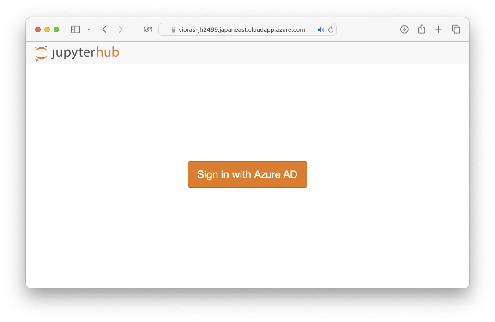
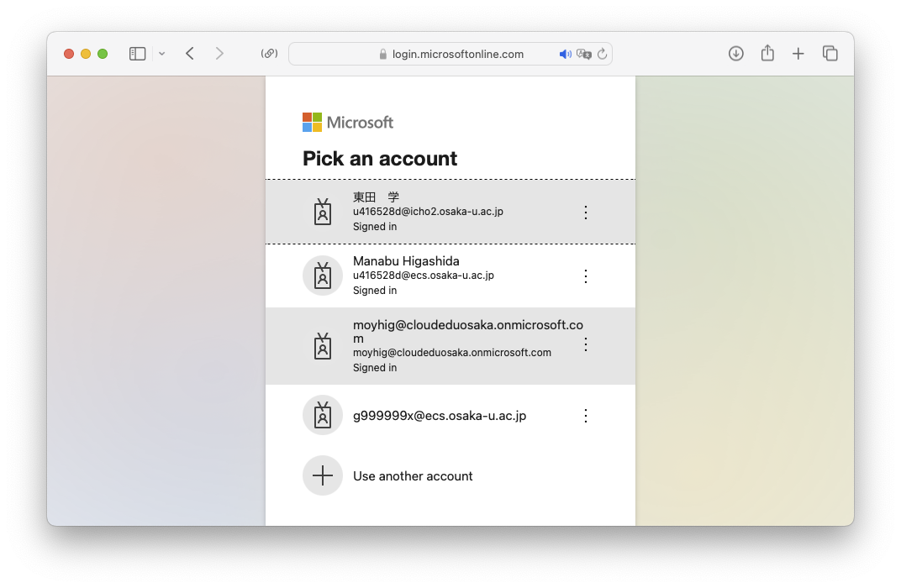
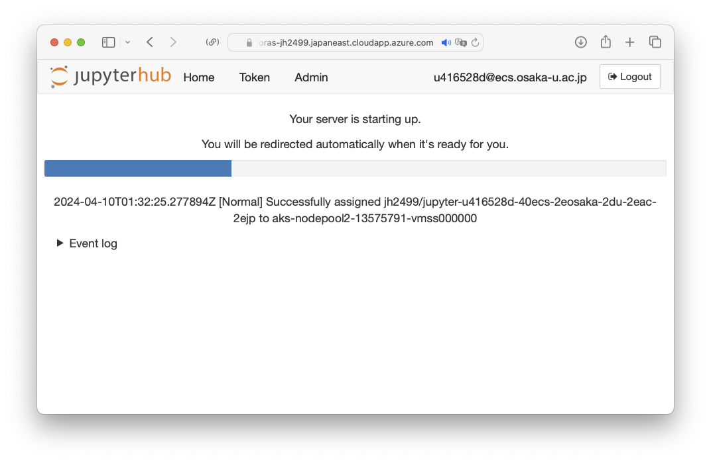
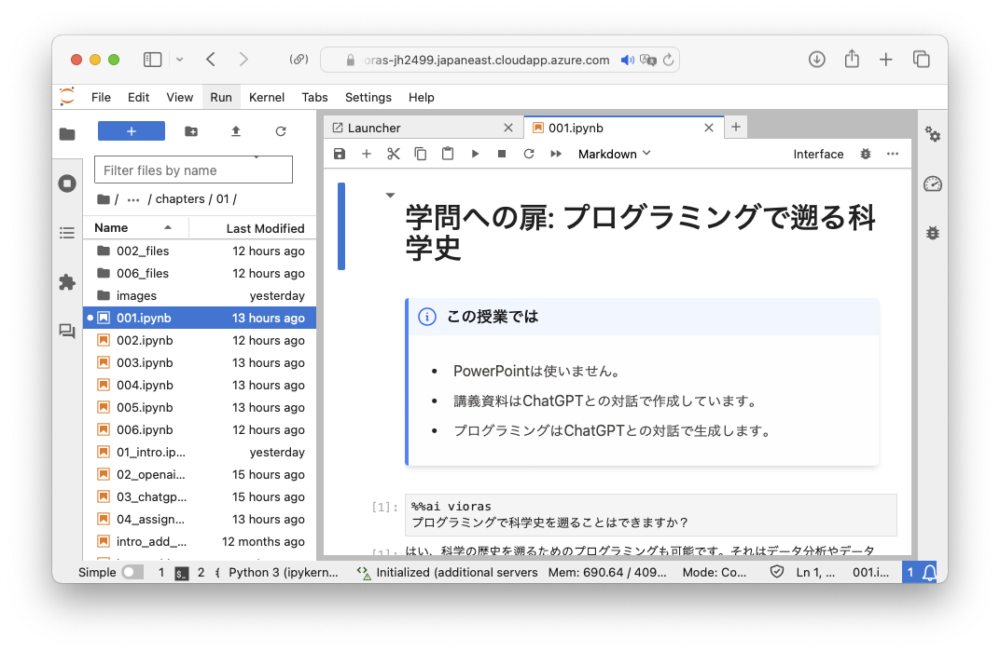

学問への扉: プログラミングで遡る科学史#
* PowerPointは使いません。
* 講義資料はChatGPTとの対話で作成しています。
* プログラムはChatGPTとの対話で生成します。
%%ai vioras
プログラミングで科学史を遡ることはできますか？
はい、科学の歴史を遡るためのプログラミングも可能です。それはデータ分析やデータビジュアライザーションの形でも行うことができます。例えば、科学的発見や理論の発展のデータを収集し、それを時間軸に沿って視覚的に表現することで、科学史の流れを理解するのに役立つプログラムを作ることができます。
これには、Pythonのようなプログラミング言語と、PandasやMatplotlib、Seabornなどのデータ分析やビジュアライザーションのライブラリがよく用いられます。以下に、一例を示します（ただし、このプログラムは具体的なデータがないため実行できません）：
import pandas as pd
import matplotlib.pyplot as plt
# 科学的発見のデータを読み込む
data = pd.read_csv('scientific_discoveries.csv')
# 発見の年度でデータをソートする
data = data.sort_values('year')
# 発見の数を年度で積み上げた棒グラフを作成する
data['year'].value_counts().sort_index().cumsum().plot(kind='bar')
plt.title('Cumulative scientific discoveries over time')
plt.xlabel('Year')
plt.ylabel('Number of discoveries')
plt.show()
このプログラムは、’scientific_discoveries.csv’というファイルから科学的発見のデータを読み込み、それを年度でソートします。そして、各年度の発見の数を積み上げた棒グラフを作成します。これにより、時間の経過とともに科学的発見がどのように増加してきたかを視覚的に理解することができます。
ただし、これはあくまで一例であり、具体的な方法は目的や利用可能なデータによります。また、科学史を遡ることは、ただデータを解析するだけではなく、その背景にある思想や文化、社会的な影響などを理解することも重要です。
%%ai vioras
`scientific_discoveries.csv`の具体的なデータはありますか？
申し訳ありませんが、私は具体的なscientific_discoveries.csvファイルを提供する能力がありません。このファイル名は一例として使用したものです。
しかし、あなたが自身で科学的な発見に関するデータを集めることができれば、そのデータを用いてプログラムを実行することが可能です。
一般的に、このようなCSVファイルは次のような構造を持つことが多いです：
discovery,year,scientist,field
Relativity Theory,1905,Albert Einstein,Physics
Penicillin,1928,Alexander Fleming,Biology
DNA Structure,1953,James Watson & Francis Crick,Biology
...
この例では、各列はそれぞれ「発見」、「年」、「科学者」、「分野」を表しています。具体的なデータは、あなたが収集した情報に基づいて異なるでしょう。
Jupyter BookからJupyterHubをアクセスする#
Tip
資料右上のアイコン列から「ロケット」を選択し、さらに「JupyterHub」を選択します。

Tip
JupyterHubに遷移し、認証が求められます。
真ん中の「Sign in with Azure AD」を選択します。
アカウントはOUMailアカウントを使います。スマートフォンによる多要素認証が必要になります。
ブラウザの履歴によっては、認証が必要ない場合がありますが、異なるアカウントが有効化されている時があります。
その場合は、ブラウザを再起動して下さい。



Tip
JupyterHub経由で、JupyterLabが起動し、Jupyter Notebookによる対話操作が可能になります。

用語解説#
Attention
この用語解説では、ChatGPTの回答をそのまま用いています。
%%ai vioras
Jupyter BookとJupyter Notebookの違いについて
もちろんです、Jupyter BookとJupyter Notebookは、両方ともJupyterプロジェクトの一部であり、データ分析と可視化を支援するツールですが、それぞれ異なる機能と目的を持っています。
Jupyter Notebook：
Jupyter Notebookは、コード、テキスト、数式、グラフなどを含む文書を作成できるインタラクティブな環境です。これは、プログラミングコードを書き、その結果をリアルタイムで確認するためのツールであり、主にデータ分析、可視化、機械学習などのタスクを実行するために使用されます。Jupyter Notebookは、Pythonをはじめとする多くのプログラミング言語をサポートしています。
Jupyter Book：
Jupyter Bookは、Jupyter Notebookを基にして作成されたプロジェクトで、Jupyter NotebookやMarkdownファイルを使用して書籍やドキュメントを作成できます。Jupyter Bookは、静的なHTMLページまたはPDFファイルとして出力でき、その結果はWebで公開することができます。これらの書籍は、リンク、引用、数式、コードスニペットなどを含むことができ、学術的な出版物や教育資料として使用するのに適しています。
つまり、Jupyter Notebookはインタラクティブなコード実行と結果の表示に重点を置いているのに対し、Jupyter BookはJupyter Notebookの内容をより広範でアクセスしやすい形式で共有することを目的としています。これらは互いに補完的なツールであり、一緒に使用することで効果的なデータ分析とその結果の共有を実現することができます。